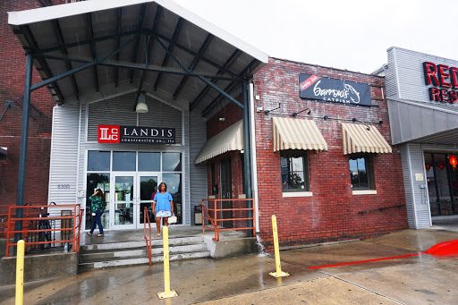

When it comes to fried seafood, the city of New Orleans has many greats, but the king of fried catfish is Barrow's.

The first word that comes to my head when thinking of the food at Barrow's is exceptional. They have taken a classic fried food dish and not done anything fancy to it, but rather they have perfected it. The way that they prepare their catfiah is with a classic breading and a light seasoning. The cruch on the batter along with the light flaky meat of the fish make my mouth water just thinking of it. Along side the catfish is a fresh scoop of potato salad, and the creamy potato salad nicely offsets the crispy bites of catfish. Although I do not know why one would want to stray away from the catfish, Barrows does have other options to choose from. They also have fried osyters and shrimp with a varity of other sides and starters. I have never vertured away from the catfish, but I have no doubt that all the other items on the menu are outstanding.

The service at Barrow's is second to none. Upon walking in you are greated by a highly hospitable host that will seat you at a table. The host when I visited was the nicest man that I have ever met. He would periodically check on us to make sure we were well taking care of. The waitress that took care of us was also very great; she was always checking in to make sure that we had everything that we needed and that the food was perfect. Even the head chef came out to make sure all the food was perfect.
Barrow's is located at 8300 Earhart Blvd. Suite 103. The location is very easy to access and is conveintly located in Mid-City. Parking is not an issue because of the large lot that is in front of the building.

Overall, Barrow's is the total package. It offers great food, excellent service, and a convenient location. If you are ever in the mood for fried catfish, then look no further then Barrow's Catfish. It is a must eat for all locals and tourists.
Visit Barrow's Website